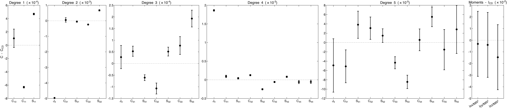
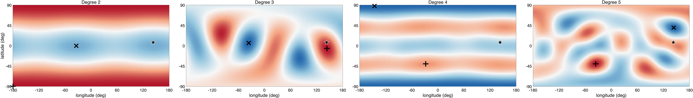
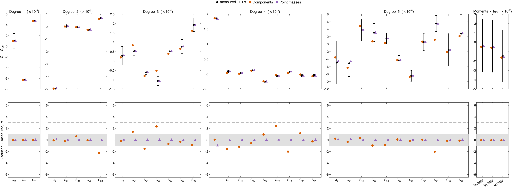
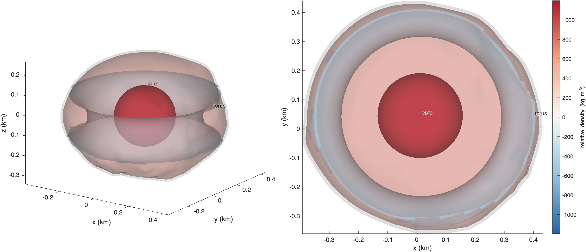
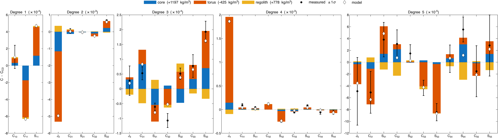
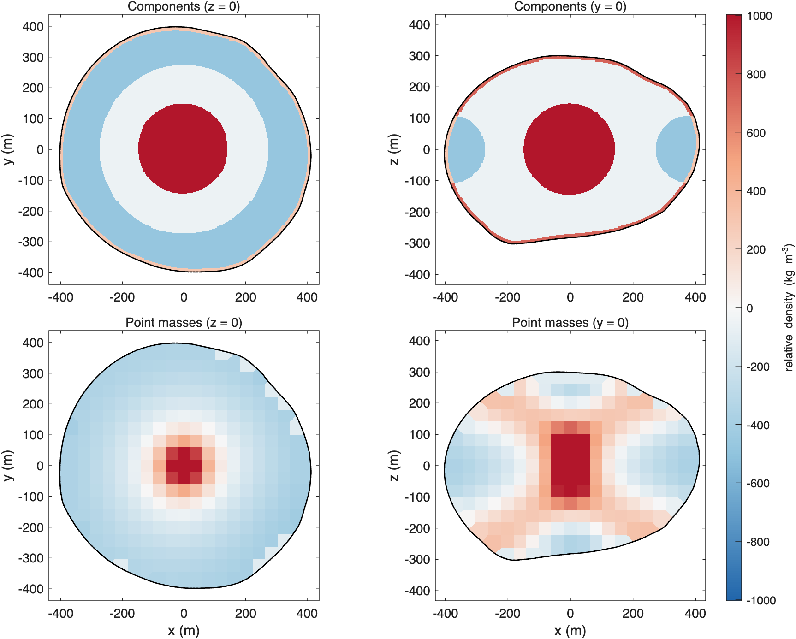
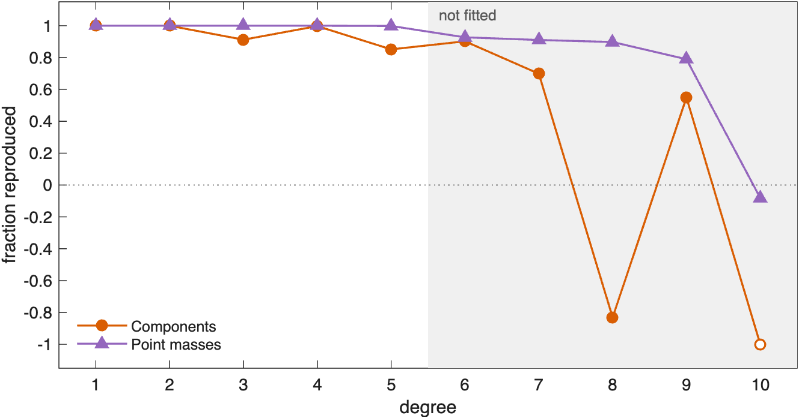

ROB-DATA3: Didymos#
Last edited October 29, 2026
In ROB-DATA3 the even zonal coefficients change far more than anything else: is 570σ lower and 95σ higher than at constant density. Only something symmetric about the spin axis does that, and lower means less mass in the equatorial plane. A model of three components built on that reading fits with 6 parameters: a dense core, a light thick torus about the spin axis and a dense surface layer. The point masses, given no shapes, find a dense center inside a light equatorial ring and correlate 0.68 with it cell by cell. The sector grids, whose sectors run from the center to the surface, cannot make a ring and fail. Against ROB's exact values the torus model holds to degree 7, and the point masses to degree 9.
| Kind | Model | Parameters | Reduced χ² | p | AIC | Exact values, degrees 1–5 | Exact values, degrees 6–10 |
|---|---|---|---|---|---|---|---|
| Components | core, torus, layer | 6.0 | 1.22 | 0.18 | 51.1 | 1.00 | 0.79 |
| Point masses | 2667 points | 33.9 | 0.25 | 0.91 | 68.8 | 1.00 | 0.92 |
| Sector grid | 2 × 4 × 8 | 28.8 | 411.15 | < 0.01 | 3851.8 | 0.94 | −1.10 |
The best solution of each kind, by AIC (bold: the lowest). Parameters: the effective number of parameters. Exact values: the fraction of ROB's exact coefficients a solution reproduces, over the fitted degrees 1–5 and over degrees 6–10, which were not (1: all; 0: no better than constant density; negative: worse). See How to read these pages.
1. What the measurements show#

| Measurement | C − C_CD | 1σ | In σ | What it says |
|---|---|---|---|---|
| −51 | center of mass toward −x | |||
| +36 | center of mass toward +y | |||
| +570 | lower: mass toward the poles or the center | |||
| −9 | mass toward ±y more than ±x | |||
| +17 | mass toward longitudes 45° and −135° | |||
| −5 | order 1, strongest at longitudes −49° | |||
| −5 | order 2, strongest at longitudes −103°, 77° | |||
| +5 | order 3, strongest at longitudes −97°, 23°, 143° | |||
| −95 | higher: mass toward mid-latitudes (about 30° to 70°) | |||
| +7 | order 2, strongest at longitudes −32°, 148° | |||
| −15 | order 2, strongest at longitudes −32°, 148° | |||
| −4 | order 3, strongest at longitudes −78°, 42°, 162° | |||
| +4 | order 3, strongest at longitudes −78°, 42°, 162° | |||
| −3 | order 3, strongest at longitudes −159°, −39°, 81° | |||
| −6 | order 3, strongest at longitudes −159°, −39°, 81° |
The measurements more than 3σ from constant density.
and change by 12% and 35% of their values at constant density; the odd degrees change by a few percent. A change confined to the even zonal terms is the signature of a ring or torus about the spin axis. The sign says the ring is light: lower means mass has moved out of the equatorial plane, toward the poles or the center. The center of mass is 0.56 m off center, toward −x and +y, and , and change by 9 to 17σ: there is something off center as well, but it is small. Degree 5 is resolved, but only just: is 6σ and 3σ from constant density.
2. Where the mass is#

Degree 2 is nearly a band: excess at both poles, deficit all around the equator. Degree 4 puts its excess at mid-latitudes and its deficit at the poles and the equator. Together they describe mass taken from an equatorial ring and put either nearer the center or at mid-latitudes. The model built for this package therefore has a light torus about the spin axis, a dense core at the center, and a surface layer whose density is free. The torus's ring and tube radii were chosen by the χ² of each pair (ring radius 1.00 or 1.05, tube radius 0.25 or 0.30 of the mean radius); the best is a ring of 383 m and a tube of 110 m.
3. How well each solution fits#

Two kinds fit: the model with components and the point masses. The model with components needs 6 parameters, the point masses 34 effective parameters; by AIC the components rank first, 18 ahead. The sector grids cannot fit (reduced χ² above 400). Each sector runs from the center to the surface, so a sector grid can make the equator lighter only along the whole radius, which also takes mass from the center.
4. The model with components#

| Component | Shape and place | Relative density (kg/m³) | Density (kg/m³) | Mass anomaly (kg); makes most of |
|---|---|---|---|---|
| core | sphere, radius 146 m, 5 m from the center toward lat 9°, lon 146° | +1197 ± 104 | 3749 | ; +133σ, −14σ |
| torus | torus, ring radius 383 m, tube radius 110 m, axis 0° from z, center 0 m from the center | −425 ± 7 | 2126 | ; +478σ, −92σ |
| regolith | surface layer, 0 to 11 m deep | +778 ± 252 | 3330 | ; −40σ, +5σ |
Background density 2552 kg/m³ (bulk density 2601 kg/m³). Makes most of: the component's part of each coefficient in units of its 1σ.

- The torus (−425 ± 7 kg/m³) makes nearly all of and : 478σ of and 92σ of . Its ring of 383 m lies just inside the equatorial surface; the part of its tube inside the body is a light belt about 120 m deep under the equator.
- The core (+1197 ± 104 kg/m³, radius 146 m, 5 m from the center) puts back at the center part of the mass the torus takes away, and moves the center of mass toward −x and +y.
- The surface layer (+778 ± 252 kg/m³, 11 m thick) corrects by −40σ.
5. Point masses and components side by side#

| Solution | Mass moved (% of M) | Excess centered at (m) | Deficit centered at (m) |
|---|---|---|---|
| Components | 3.3 | (−3, 2, −1) | (6, −5, −1) |
| Point masses | 3.9 | (−3, 3, 1) | (9, −6, −2) |
| Correlation | Components | Point masses |
|---|---|---|
| Components | 1.00 | 0.68 |
| Point masses | 0.68 | 1.00 |
Mass moved: the mass above the bulk density, as a percentage of the mass of the body. Excess and deficit centers are from the center of figure. Correlation: of the relative densities of the solutions, 41 m cell by 41 m cell.
The point masses come close to the model with components. On both planes they put a dense block at the center, about the size of the core, inside a light equatorial region that reaches the surface where the torus does. On the y = 0 plane they also put dense material at mid-latitudes near the surface, which the model with components gives to its dense surface layer. The two correlate 0.68 cell by cell, as on ROB-DATA1.
6. Against ROB's exact values#

Both reproduce 85 to 100% of each fitted degree, 1 to 5, and predict 90 to 93% of degree 6. The model with components holds to degree 7 (70%), fails at degree 8 and reproduces 55% of degree 9. The point masses hold to degree 9 (79 to 93%). Over degrees 6 to 10 the point masses reproduce 92% and the model with components 79%. The light equatorial ring and the dense center are what the hidden interior has. The point masses, by not committing to a torus of one size and one density, describe its finer form better than the torus does.